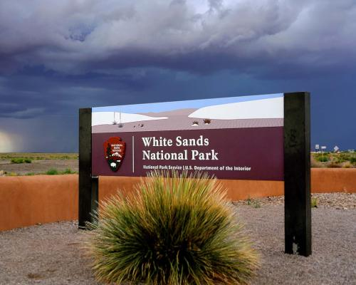

Discover one of the world's great natural wonders, the glistening white sands of New Mexico. The seemingly endless sea of white sand engulfs nearly 275 sq. mi. of desert, with nearly 230 sq. mi. for recreating, makes up the world's largest gypsum dune field. White Sands was established as a national monument in 1933 and re-designated as a national park in 2019.

Scheduled hours for visiting:
- Sunday: 7:00 hours - 20:00 hours
- Monday: 7:00 hours - 20:00 hours
- Tuesday: 7:00 hours - 20:00 hours
- Wednesday: 7:00 hours - 20:00 hours
- Thursday: 7:00 hours - 20:00 hours
- Friday: 6:00 hours - 22:00 hours
- Saturday: 6:00 hours - 22:00 hours